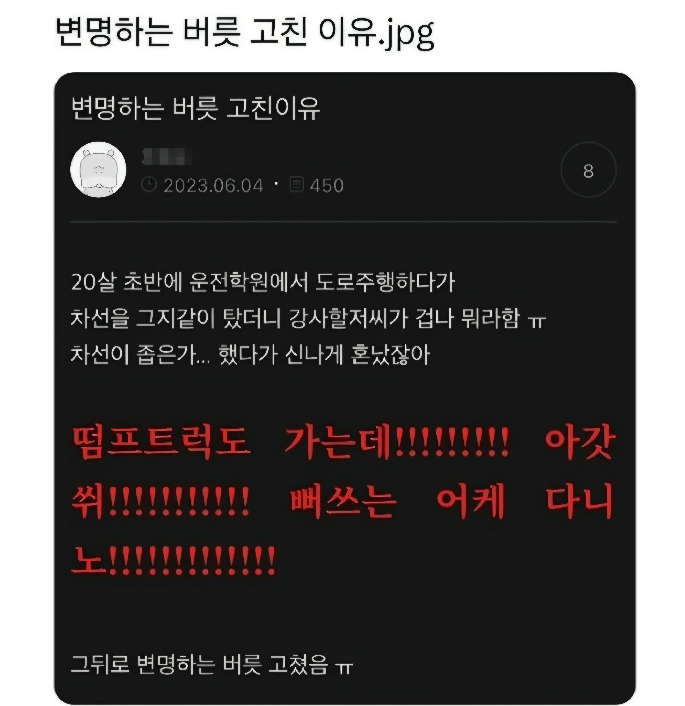

변명하는버릇 고친 이유.jpg
댓글
어어..
"그, 그기 와 지나가노..."
어어 왜지나가는거에요
처음 자주포 조종했을때 생각나네
자주포는 ㄹㅇ 차선이 좁잖아....
빠스네유
ㅅㅂㅋㅋ
이런 사람 진짜 너무 짜증남. 모든 일에 핑계 대고 변명을 함.
댓글창이 좁은가...
아가쒸익쒸익 살찐 나도 댓글 다는데!! 쒸익쒹 !
아니 아갓쒸!!!!!!!!!!!!
개드립만큼 댓글 글자수 제한이 넉넉한곳이 어딨다고!!!!!!!!!!!!!!
❗❗❗❗❗다른 사이트 안가봤노❗❗❗❗❗
ㄹㅇ 승희는 개드립콘 4개까지 등록할수있게 만들어야함
ㅈㄴ웃기네 ㅋㅋㅋㅋ
너 박위상태야
나도 저런 마인드로 1톤 트럭도 지나가는데 쌉가능하지 하고 갔는데 개쫍아서 개쫄렸었음
알고보니까 1톤트럭이 차폭은 의외로 되게 작더라? ㅋㅋㅋ 전폭이 1,740mm 밖에 안되드라고 .. 엑센트보다 짝아
심지어 범퍼 앞까지 시야가 다보여서 앞으로 지나가는건 ㅈㄴ쉬움 ㅋㅋㅋ
왜 이런일이 발생했는지
내가 무엇을 보고 듣고 판단해서 이렇게 됐는지 설명하는게
변명이라고 생각하는 사람들 많더라
도대체 회사에서 그냥 죄송합니다 하고 알아서 처리하는게 맞다고 생각하는 사고방식을 이해못하겠음
변명이 아닌 설명을 하고 싶었나보네.
그런데 혹시 인정보다 설명을 앞서서 시도했니?
그전에 결과 혹은 성황부터 전달하는게 정석임 인정이 아님
그 뒤에 이러한 결과나 나오게된 원인을 분석해서 전달하고
재발 방지를 위한 대책까지 전달하는게 세트임
본인 책임소재가 전혀 없는 상황에서의 설명을 변명으로 듣는게 이해안된단거구나? 그건 이해가 된다. 근데 그 설명이 결과에 대한 책임을 져주나? 너의 판단으로 어떠한 결과가 발생했는데 그게 문제가 됐다면? 결과에 대한 책임자가 너라면 죄송해하고 알아서 처리하는걸로 안끝남
이런게 이해 안된다는거임
내가 설명한다는게 책임을 지는 행위라고 한적이 있음?
어떤 문제가 발생하면 관리자든 임원이든 현상을 파악하기 위해 보고를 받아야함
가장 먼저 나와야할게 제잘못입니다 죄송합니다 이게 아니란거임
이게 문제인지 문제라면 얼마나 큰 문제인지
판단하는건 관리자임
물론 개좆도 아닌거 물쏟았어요 죄송해요
이딴거 말고 ㅋㅋ
어렸을때 집에서 사소한 잘못만 해도 뒤지게 혼나던 사람들은 그래.. 내가 그랬다
[관리자나 임원이 보고받고 판단을 해야할 상황]이라면..글쎄.. 이미 네 선에서 문제가 해결 안 될 상황이 생긴거 아닌가?
그 상황에서 요구받지않은 설명을 먼저 시전하는건 사족일 뿐임.
ㅋㅋ 추천수 보소
보통 많은 사람들이 인정한 결과는 보통 맞음
나도 존나이해안됨 그런새끼들은 그냥 아묻따 죄송합니다를 듣고싶어함
관리자 직급 정도 되면 관리해야 될 부분은 많은데, 그걸 일일히 다 기억하고 컨트롤하기는 어려운데 또 동시에 인원들 통제는 해야 함
그걸 쉽게 하는 방법은 그냥 윽박지르고 똑바로 하라고 하는 거임
그 사람도 자기가 어느정도 억까한다는걸 아는데 그냥 권위로 찍어누르는거임
거기서 대충 비위 맞춰주면 그냥 넘어가는 거지 WWE라고 보면 됨
그걸 또 설명하려 들면 관리자 입장에선 당연히 WWE 중에 사전에 협의안된 기술을 거는 셈이고, 그때부터 UFC로 넘어가는거지
왜 그랬는지 이유가 진짜로 궁금한거면 '죄송합니다 말고 왜 그렇게 된건지 이유를 말해보세요' 라는 식으로 직접 물어보게 되어있음
너 intp지?
이건 이러 저러해서 내 실수가 아니다!
라고 확실한 설명을 했는데
개지랄 하면 개가 이상한거임
다만 그게 개소리면 너가 이상한거임
개가 개지랄 하는거임?
그렇지
아갓쒸!!!!!

맨날 변명하는 새끼랑 일하면 패죽이고 싶다 시발
아니, 그게 아니라
개붕씨 너무하네 그러려던것도 아닌데 참

얼마나 넓은거야 ㄷㄷㄷ
딸키우는 개붕이들 저거 조심해라
딸들이 자라면서 오냐오냐 키워지다보니
자기 잘못과 실수도 남탓하고 인정 안하는데
일상생활에서 평판 좆박는다
잘못한거 실수한거 있으면 명확히 짚어라
애가 지랄을하든 뭐하든 확실히 각인시켜야됨
넵 지금 185일짜리 하나 키우는중
11살이 됐는데도 긴장의 끈 놓지 않는다. 뭐 말만 하면 첫마디가 일단 '아니~'로 시작해. 너 말 들어보면 너가 잘못한건 하나도 없는데 결과는 왜 이래? 그럼 어디가 잘못된거야? 너 혼자 하는건데 잘못이 없으면 누가 잘못했다는거야? 계속 끊임없이 물어보는 수밖에 없다.
아들이었으면 훨씬 쉬웠을텐데 딸은 어려워
일본에서 운전해보면 우리나라는 존나 넓은거임
저 초보 입장에선 차선이 좁은 거 맞음 ㅋㅋㅋ 저 좁다는 감각이 도저히 사라지지 않으면 운전하면 안 됨. 실력이 안 되니 충분한 길도 좁아보이는 거 거든......
내가 그래서 주차장 좁다고 느끼면 차없는 데까지 가서 딱 맞춰 세움.......도저히 안 긁고 차들 사이로 들어갈 자신이 읎다....
운전 처음할때 가운데 화살표에 자기의 오른발이 닿는다는 느낌으로 하라는 아저씨덕에 단한번도 헷갈리게 안하고 잘다님 명강사셨제
"땅크도 지나가겠다"